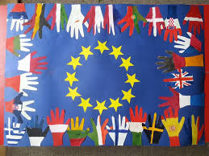

In questa sezione elencherò il mio livello in ognuna di queste competenze.
Penso che in questi anni scolastici di aver appreso una buona competenza alfabetica.

Potrei migliorare molto di più ma sono abbastanza soddisfatto dei miglioramenti fatti quest'anno.
Dopo questi tre anni scolastici e le varie ore passate a sviluppare autonomamente le mie passioni tecnologiche posso confermare di aver appreso molto su questa competenza.
Fin da piccolino ho sempre giocato e usufruito di questi strumenti digitali ma sempre facendone buon uso, questo mi ha aiutato ad avere un'ottima competenza digitale.
Dovrei migliorare le mie abilità nell'insegnamento ma ci devo ancora lavorare.
Rispetto tutto e tutti grazie all'insegnamento dei miei genitori e della scuola.
Penso che su questo aspetto mi devo concentrare maggiormente visto che il mondo del lavoro ormai ha contatti internazionali.
Ho grandi abilità imprenditoriali, so riuscire a gestire molte task allo stesso tempo sviluppando competenze di multitasking.